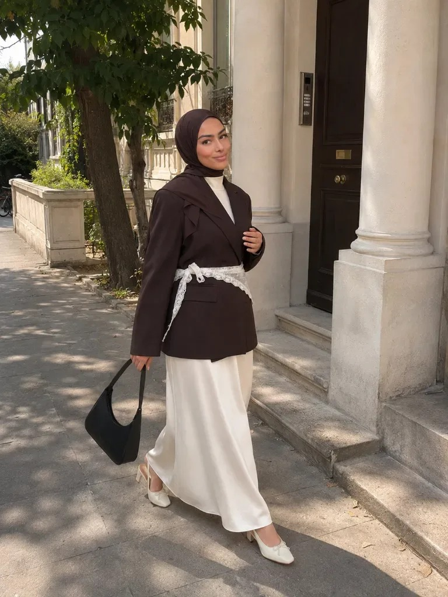
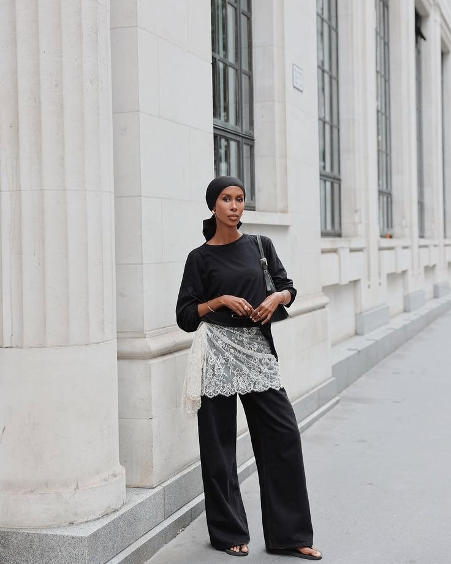
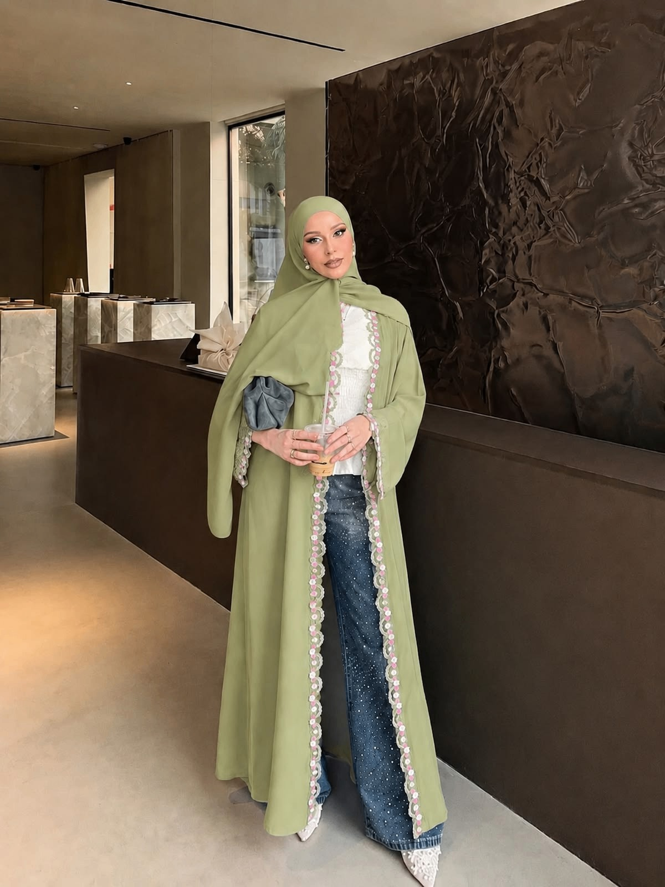
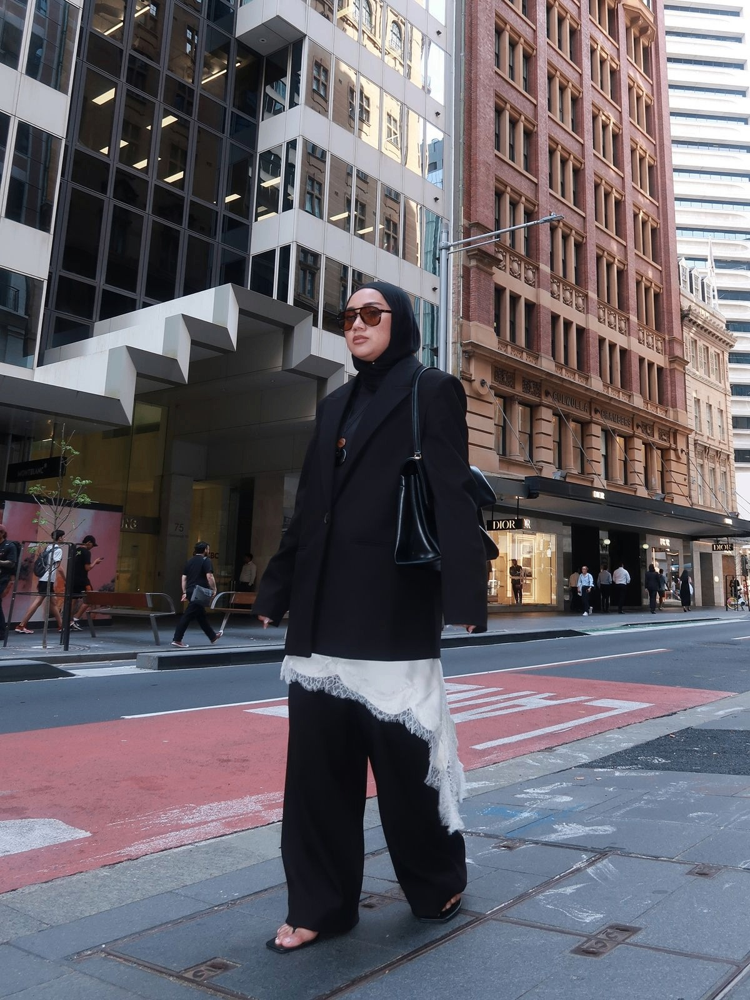
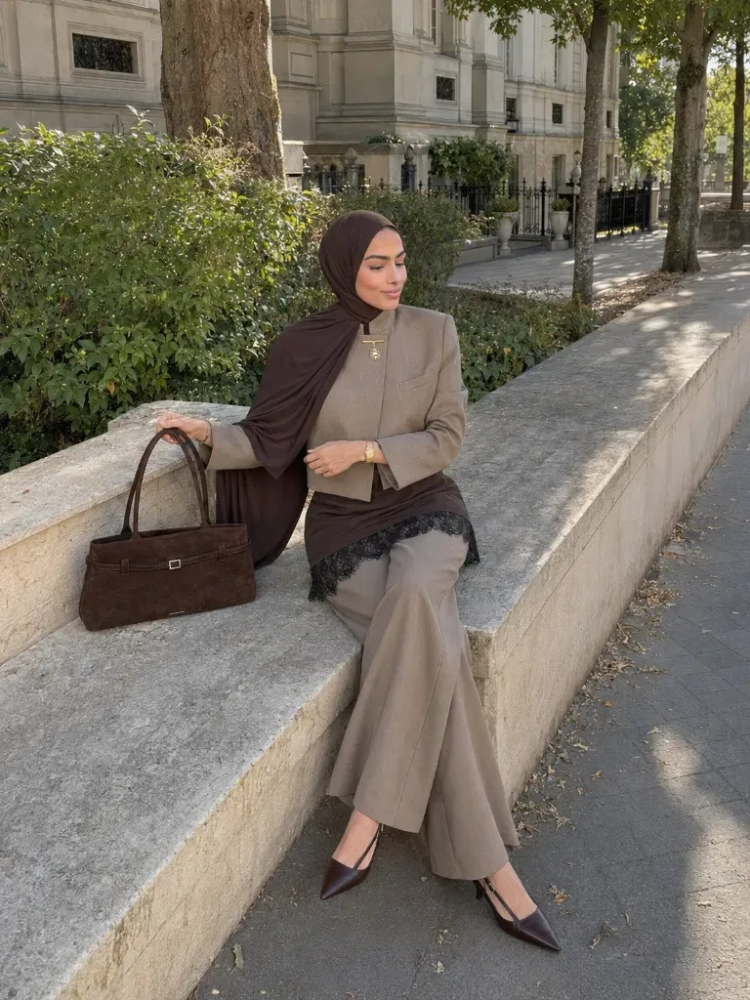

All three use the real photographs, the real copy, and the site's own tokens (Bodoni Moda / Marcellus / Jost, parchment + ink + brass). Each frame is a 390 px iPhone width and scrolls independently. Credits only appear where there is a real one — three of the five have no known owner.
Option A · Alternating
One idea, then the picture that proves it. Photos run edge to edge, full width. Longest scroll, most editorial — reads like a magazine spread.
Lace adds detail without changing the outfit. If something feels boring, you do not need a different outfit. You need one lace piece in it.

The rule is to wear it with something structured. Structured does not mean stiff — a satin skirt is flowy and still structured, because it falls in one straight line. Soft is the thing to avoid.

Denim is the easiest version of this. It works because it is soft against hard, and those two are about as far apart as fabrics get.

Then contrast, which lace loves. Black lace against white pulls every eye straight to the lace. Put that same black lace on black and it quietly disappears.


Option B · Lead photo, then the grid
One big picture sets the tone, all the words in one block, then the rest as a flush 2-up. Shortest scroll of the three; the text stays one continuous read.
Lace adds detail without changing the outfit. That is the whole reason it earns a place in an everyday wardrobe — you are not rebuilding a look, you are giving one you already own the bit of flair it was missing.
The rule is to wear it with something structured. Structured does not mean stiff, and it does not mean the opposite of flowy — a satin skirt is flowy and still structured, because it falls in one straight line. Soft is the thing to avoid.
Denim is the easiest version: soft against hard. Then contrast, which lace loves — black lace against white pulls every eye straight to it.
Option C · Mosaic, text inside it
Photos in a staggered two-column mosaic with the words as a card sitting inside the run. Most "feed"-like — closest to how this would look on Instagram.
Lace adds detail without changing the outfit. If a look feels boring, you do not need a different outfit — you need one lace piece in it.
Wear it with something structured. A satin skirt is flowy and still structured, because it falls in one straight line. Soft is the thing to avoid.
Denim is soft against hard. And contrast: black lace on white pulls every eye to it; black on black disappears.